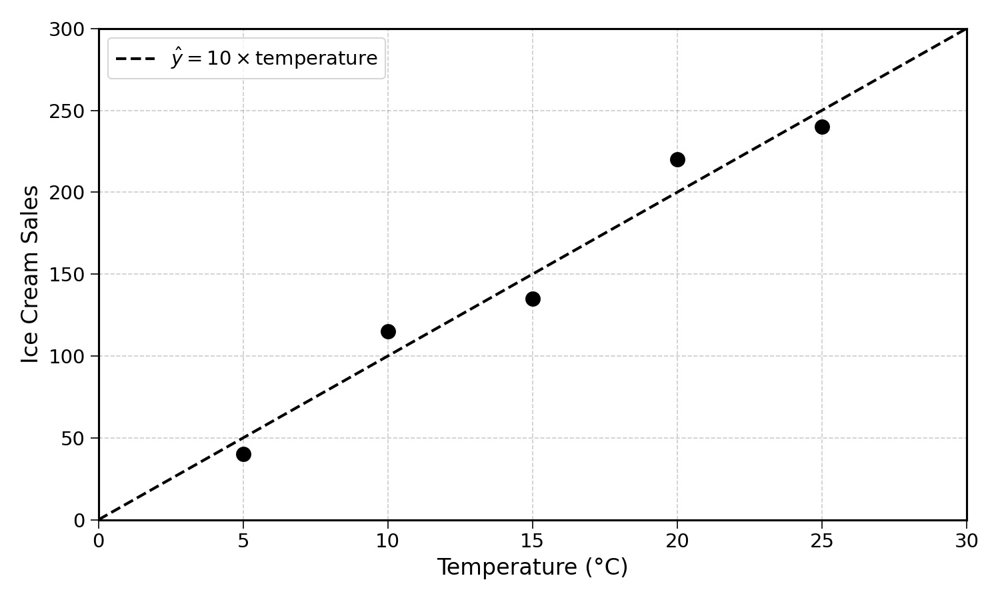
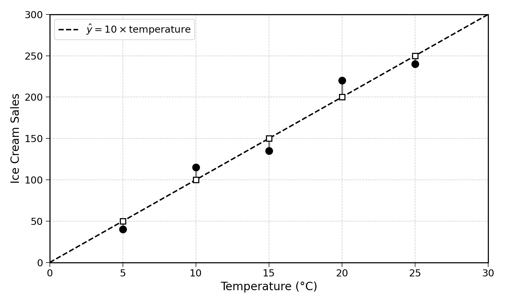
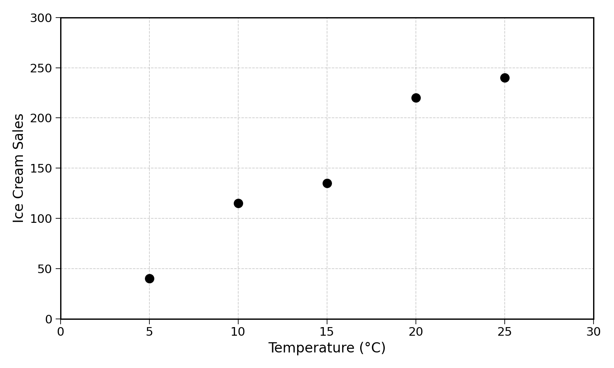
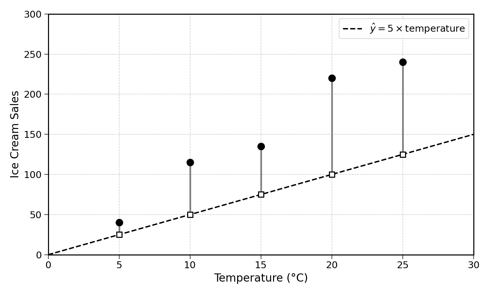
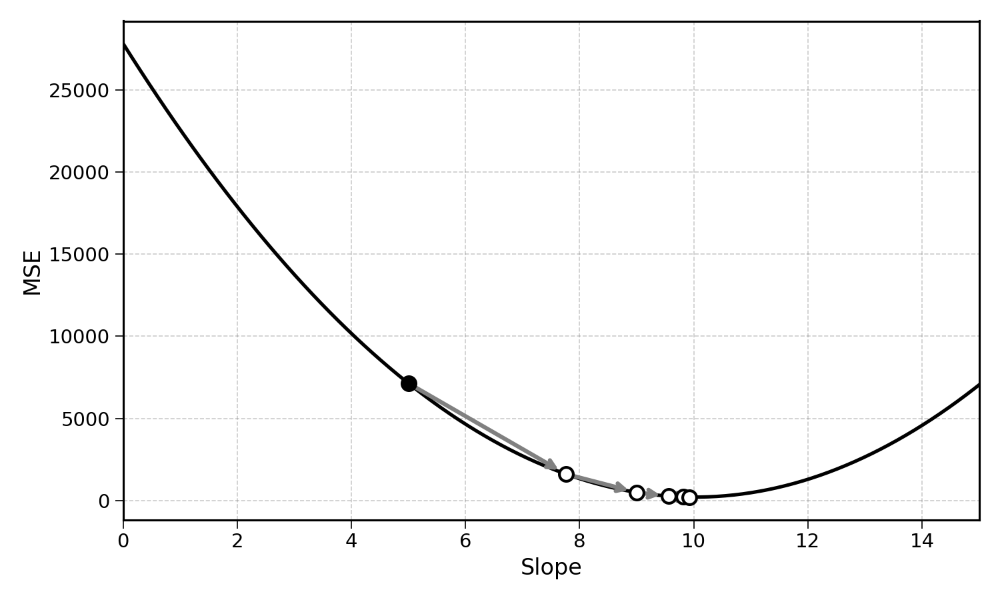

11 Fitting a Linear Regression with Gradient Descent
It is now time to bring everything together. In previous chapters, we measured the error of a regression, learned about derivatives, the chain rule, and used gradient descent to minimise functions. These concepts are fundamental to the ongoing AI revolution.
Fitting a linear regression is finding the line that best estimates historical data. Using this fitted linear regression, we can generate predictions on unknown inputs.

Fitting a linear regression involves minimising the prediction error of the model. This error can be computed by averaging the squared error of the line.

11.1 Fitting a Line with a Single Parameter
Let’s imagine an ice cream shop in which there are no customers when the temperature is 0 degrees Celsius, but after that, sales increase as the temperature increases.

Since there are no customers at 0 degrees, the intercept is 0. The prediction model becomes:
\[ \text{Ice Cream Sales} = \text{slope} \times \text{temperature} (+ 0) \]
The question now is, how do we find the slope that minimises the prediction error of the model?
11.2 The MSE as a Function of the Slope
The prediction error can be calculated with the Mean Squared Error. For a given slope value, the MSE is:
\[ \text{MSE} = \frac{1}{n} \sum_{i=1}^{n} (\hat{y}_i - y_i)^2 \]
With \(\hat{y}_i\) the prediction for a given observation \(i\). This formula works well. But can you see an issue? We are interested in the derivative of the MSE with regards to the slope. The slope is not in the above equation.
We can add it by replacing \(\hat{y}_i = \text{slope} \times x_i\). Doing so, we get:
\[ \text{MSE}(\text{slope}) = \frac{1}{n} \sum_{i=1}^{n} (\text{slope} \times x_i - y_i)^2 \]
Now that the slope appears in the equation, we can compute the derivative of the MSE with regards to the slope.
11.3 Differentiating the MSE
We can now compute the derivative of the MSE with regards to the slope, starting from:
\[ \text{MSE}(\text{slope}) = \frac{1}{n} \sum_{i=1}^{n} (\text{slope} \times x_i - y_i)^2 \]
This expression looks more complex as it contains a sigma operator. It turns out that this is not a problem for derivatives. We can compute the derivative inside the summation operator because the derivative of a sum is the sum of the derivatives.
Let’s focus on differentiating the inside of the summation operator for an observation \(i\):
\[ (\text{slope} \times x_i - y_i)^2 \]
This is the type of complex expressions we studied in the chain rule chapter. You now know three ways to differentiate the MSE with regards to the slope, the chain rule, expanding the squared term, or using the product rule.
Exercise 11.1 Differentiate \((\text{slope} \times x_i - y_i)^2\) with regards to \(\text{slope}\) by expanding the squared term.
Hint: expand using \((a - b)^2 = a^2 - 2ab + b^2\), then differentiate each term with regards to \(\text{slope}\), treating \(x_i\) and \(y_i\) as constants.
This chapter will walk through the differentiation of the MSE using the chain rule.
The MSE can be seen as a composition of functions. Focusing on a single observation \(i\), the expression \(\text{(slope} \times x_i - y_i)^2\) is a function of a function. Let’s define:
\[ f(u) = u^2 \quad \text{and} \quad g(\text{slope}) = \text{slope} \times x_i - y_i \]
So that:
\[ (\text{slope} \times x_i - y_i)^2 = f(g(\text{slope})) \]
Applying the chain rule:
\[ \frac{d}{d\text{slope}} f(g(\text{slope})) = \frac{df}{dg} \times \frac{dg}{d\text{slope}} \]
Computing each piece:
\[ \frac{df}{dg} = 2g = 2(\text{slope} \times x_i - y_i) = 2(\hat{y}_i - y_i) \]
\[ \frac{dg}{d\text{slope}} = x_i \]
Since \(x_i\) and \(y_i\) are constants (they are observed data), the only variable is \(\text{slope}\).
Multiplying both pieces together:
\[ \frac{d}{d\text{slope}} (\text{slope} \times x_i - y_i)^2 = 2(\hat{y}_i - y_i) \times x_i = 2x_i(\hat{y}_i - y_i) \]
Putting this back into the full MSE expression:
\[ \frac{d \, \text{MSE}}{d \, \text{slope}} = \frac{1}{n} \sum_{i=1}^{n} 2x_i(\hat{y}_i - y_i) \]
This is the derivative of the MSE with regards to the slope. It tells us how the MSE changes as we change the slope.
11.4 Applying Gradient Descent
With the derivative of the MSE, we have all the elements we need for gradient descent.
Step 1: start with a random guess, like \(\text{slope} = 5\).
Step 2: compute the derivative of the MSE at this point.
To compute this value, we need to sum the derivative of the error for all the data points.

The predicted values at \(\text{slope} = 5\) are:
| \(x_i\) (Temperature) | \(y_i\) (Sales) | \(\hat{y}_i = 5 \times x_i\) | \(\hat{y}_i - y_i\) | \(2x_i(\hat{y}_i - y_i)\) |
|---|---|---|---|---|
| 5 | 40 | 25 | \(-15\) | \(-150\) |
| 10 | 115 | 50 | \(-65\) | \(-1300\) |
| 15 | 135 | 75 | \(-60\) | \(-1800\) |
| 20 | 220 | 100 | \(-120\) | \(-4800\) |
| 25 | 240 | 125 | \(-115\) | \(-5750\) |
As you can see, the linear regression with a slope of 5 underpredicts for all observations. We can do better.
Remembering the derivative of the MSE with regards to the slope as:
\[ \frac{d \, \text{MSE}}{d \, \text{slope}} = \frac{1}{n} \sum_{i=1}^{n} 2x_i(\hat{y}_i - y_i) \]
We can compute its value:
\[ \frac{d \, \text{MSE}}{d \, \text{slope}} = \frac{1}{5}(-150 - 1300 - 1800 - 4800 - 5750) = \frac{-13800}{5} = -2760 \]
Step 3: update the value of the slope using the gradient descent update rule. We will use a learning rate of \(0.001\):
\[ \text{slope}_{t+1} = \text{slope}_t - \text{learning rate} \times \frac{d \, \text{MSE}}{d \, \text{slope}} \]
\[ \text{slope}_1 = 5 - 0.001 \times (-2760) = 5 + 2.8 = 7.8 \]
The slope increased from 5 to 7.8. This makes sense, the model was under-predicting (all errors were negative), so the slope needed to increase.
Step 4: repeat until convergence, when \(\text{slope}_{t+1} \approx \text{slope}_t\).
Continuing for a few more steps:
| Step | Slope | MSE Derivative | New Slope |
|---|---|---|---|
| 1 | 5.0 | \(-2760.0\) | 7.8 |
| 2 | 7.8 | \(-1220.0\) | 9.0 |
| 3 | 9.0 | \(-560.0\) | 9.6 |
| 4 | 9.6 | \(-230.0\) | 9.8 |
| 5 | 9.8 | \(-120.0\) | 9.9 |

The slope is converging towards approximately \(10\). After enough iterations, the algorithm will settle on the slope that minimises the MSE.
Exercise 11.2 Using the data and the derivative formula above, verify the computation for Step 2 (slope = 7.76). Compute all five values of \(2x_i(\hat{y}_i - y_i)\) and show that the MSE derivative is approximately \(-1242\).
11.5 Final Thoughts
We have just fitted a linear regression using gradient descent. The process can be summarised as follows:
- Start with random values for the slope
- Compute the derivative of the MSE with regards to the slope
- Update the parameters by taking a small step opposite to the derivative
- Repeat until the parameters stop changing
This is the same algorithm used to train neural networks and large language models, just applied to a much simpler model. The core idea remains the same: compute how changing each parameter affects the error, then adjust each parameter to reduce it.
We made a simplifying assumption though, the intercept was fixed at 0. A real linear regression has both a slope and an intercept. To optimise both at the same time, we need to extend gradient descent to functions with multiple inputs. This is the topic of the next section.
11.6 Solutions
Solution 11.1. Exercise 11.1
Let \(a = \text{slope} \times x_i\) and \(b = y_i\). Expanding \((a - b)^2\):
\[\begin{aligned} (\text{slope} \times x_i - y_i)^2 &= (\text{slope})^2 \times x_i^2 - 2 \times \text{slope} \times x_i \times y_i + y_i^2 \end{aligned}\]
Differentiating each term with regards to \(\text{slope}\) (treating \(x_i\) and \(y_i\) as constants):
\[\begin{aligned} \frac{d}{d\text{slope}} (\text{slope}^2 \times x_i^2) &= 2 \times \text{slope} \times x_i^2 \\ \frac{d}{d\text{slope}} (-2 \times \text{slope} \times x_i \times y_i) &= -2 x_i y_i \\ \frac{d}{d\text{slope}} (y_i^2) &= 0 \end{aligned}\]
Adding them together:
\[ 2 \times \text{slope} \times x_i^2 - 2 x_i y_i = 2x_i(\text{slope} \times x_i - y_i) = 2x_i(\hat{y}_i - y_i) \]
This matches the result from the chain rule.
Solution 11.2. Exercise 11.2
At \(\text{slope} = 7.76\), the predicted values are \(\hat{y}_i = 7.76 \times x_i\):
| \(x_i\) | \(y_i\) | \(\hat{y}_i = 7.76 \times x_i\) | \(\hat{y}_i - y_i\) | \(2x_i(\hat{y}_i - y_i)\) |
|---|---|---|---|---|
| 5 | 40 | 38.8 | \(-1.2\) | \(-12.0\) |
| 10 | 115 | 77.6 | \(-37.4\) | \(-748.0\) |
| 15 | 135 | 116.4 | \(-18.6\) | \(-558.0\) |
| 20 | 220 | 155.2 | \(-64.8\) | \(-2592.0\) |
| 25 | 240 | 194.0 | \(-46.0\) | \(-2300.0\) |
\[ \frac{d \, \text{MSE}}{d \, \text{slope}} = \frac{1}{5}(-12 - 748 - 558 - 2592 - 2300) = \frac{-6210}{5} = -1242 \]
The value is \(-1242\), matching the value shown in the convergence table.